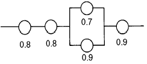
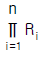
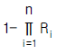
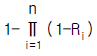
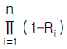
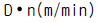
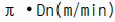
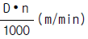
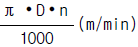

산업안전산업기사 (2004-03-07 기출문제)
1과목: 산업안전관리론
1. 태도교육의 효과를 높이기 위하여 취할 수 있는 바람직한 교육방법은?
- 강의식
- 프로그램 학습법
- 토의식
- 문답식
(정답률: 46%)

2. "그림에서 선 ab와 선 bc는 그 길이가 동일한 것이지만, 시각적으로는 선 ab가 선 bc보다 길어보인다."는 설명은 어떤 착시 현상과 관계가 깊은가?
- 헬몰쯔(Helmholz)의 착시
- 쾰러(Kohler)의 착시
- 뮬러-라이어(Muler-Lyer)의 착시
- 포겐 도르프(Poggendorf)의 착시
(정답률: 71%)
3. 현장에서 안전책임자 안전관리자는 근무중에 안전완장을 착용해야 한다. 안전완장에 바탕색깔과 어떤 내용을 한글로 표시해야 하는가?
- 노란, 직책
- 노란, 성명
- 흰색, 직책
- 흰색, 성명
(정답률: 80%)
4. 안전교육 과정 중 "할 수 있다"라는 즉 피교육자가 그것을 스스로 행함으로서만 얻어지는 교육내용에 해당하는 것은?
- 안전지식의 교육
- 안전의식의 교육
- 안전태도의 교육
- 안전기능의 교육
(정답률: 33%)
5. 단조로운 업무가 장시간 지속될 때 작업자의 감각기능 및 판단능력이 둔화 또는 마비되는 현상은?
- 망각현상
- 감각차단현상
- 피로현상
- 착각현상
(정답률: 65%)
6. 도수율 21.12인 사업장에서 한 작업자가 평생 작업을 한다면 몇 건의 재해를 당하겠는가? (단, 한 작업자의 평생 근로년수는 40년으로 계산할 것.)
- 약 1건
- 약 2건
- 약 3건
- 약 4건
(정답률: 64%)
7. 안전모의 모체와 착장체 머리고정대의 수평 간격은 얼마 이어야 하는가?
- 5mm 이상
- 5mm 미만
- 10mm 이상
- 10mm 미만
(정답률: 31%)
8. 다음 중 심리적이면서도 생리적인 요소를 모두 갖고 있는 요인은?
- 피로
- 동기저하
- 단조로움
- 근육긴장
(정답률: 73%)
9. 사업장의 년간안전보건관리계획 수립의 구성요소 가운데 가장 핵심적이며 경영자의 재해방지를 위한 굳은 신념을 나타내는 것은?
- 안전목표
- 슬로건
- 기본방침
- 중점시책
(정답률: 27%)
10. 생산현장에서 작업에 종사하고 있는 작업자가 작업을 함에 있어서 가장 안전하고 능률적으로 작업을 할수 있도록 작업내용 및 작업단위별로 사용설비,작업자,작업조건 및 작업방법 등에 관해 규정해 놓은 것을 무엇이라 하는가?
- 안전수칙
- 기술표준
- 작업지도서
- 표준안전 작업방법
(정답률: 67%)
11. 안전관리를 잘함으로서 생기는 결과가 아닌 것은?
- 생산성 감소
- 기업이 이미지 개선
- 바람직한 노사관계 형성
- 기업의 경제적 손실예방
(정답률: 84%)
12. 학습평가 도구의 기본적인 기준이 아닌 것은?
- 타당도(妥當度)
- 신뢰도(信賴度)
- 객관도(客觀度)
- 습숙도(習熟度)
(정답률: 68%)
13. 안전조직에서 line system 의 단점 중 옳은 것은?
- 비경제적 조직체제이다.
- 안전관리부와 생산부간의 유기적 협조가 곤란하다.
- 안전조직원은 전문가이어야 한다.
- 대규모 기업에서 채택이 곤란하다.
(정답률: 61%)
14. 스트레스(Stress)에 관한 설명중 적절한 것은?
- 스트레스상황에 직면하는 기회가 많을수록 스트레스 발생가능성은 낮아진다.
- 스트레스는 직무몰입과 생산성감소의 직접적인 원인이 된다.
- 스트레스는 부정적인 측면밖에 없다.
- 스트레스는 나쁜일에서만 발생한다.
(정답률: 77%)
15. U자 걸이로 사용할 수 있는 안전대는 지름 250∼300mm, 너비100mm이상의 안전대를 장착하여 로우프의 신축조절기는 각 링에 혹은 D링에 걸어 양드럼간의 중심거리를 약 500mm로 조절하여 인장 시험기로 시험할 때 인장강도는?
- 900 kgf
- 1100 kgf
- 1300 kgf
- 1500 kgf
(정답률: 21%)
16. 토의식 교육방법 중 몇 사람의 전문가에 의하여 과제에 관한 견해가 발표된 뒤 참가자로 하여금 의견이나 질문을하게 하여 토의하는 방식은 다음 중 어느 것인가?
- 패널 디스커션(panel discussion)
- 심포지엄(symposium)
- 포럼(forum)
- 버즈 세션(buzz session)
(정답률: 42%)
17. 다음 중 직무 만족도에 영향을 주는 개인적 특성이 아닌 것은?
- 일반적으로 직무 만족도는 연령에 따라 증가한다.
- 만성적 직무 불만족과 정서적 부적응간에는 긍정적인 상관이 있다.
- 교육수준이 높을수록 직무 불만족을 나타낸다.
- 직무의 수준이 높으면 직무의 만족도도 높다.
(정답률: 43%)
18. 하인리히의 재해 구성 비율 법칙에 의하면, 중상해 2건이 발생하였다면 무상해 사고는 몇 건 발생 되었다고 볼수 있는가?
- 29
- 60
- 300
- 600
(정답률: 59%)
19. 안전관리에 관한 계획에서 실시에 이르기까지 모든 권한이 포괄적이고 직선적으로 행사되며, 안전을 전문으로 분담하는 부서가 없는 안전관리조직은?
- 직계식 조직
- 참모식 조직
- 직계 - 참모식 조직
- 안전보건 조직
(정답률: 77%)
20. 피로측정법에서 생리학적 측정법이 아닌 것은?
- 정적근력작업
- 생리적 작업
- 신경적 작업
- 동적근력작업
(정답률: 26%)
2과목: 인간공학 및 시스템안전공학
21. 인체의 생리적 변화를 측정하는 것과 거리가 먼 것은?
- 구조적 측정
- 심박수 측정
- 산소 소비량 측정
- 근전도 측정
(정답률: 57%)
22. 작업 영역을 설계할 때 조정가능성의 대상에 해당하지 않는 것은?
- 작업대의 조정 가능성
- 작업공구의 조정 가능성
- 작업대상물의 조정 가능성
- 작업대와 관련된 작업자 자세의 조정 가능성
(정답률: 44%)
23. 시스템 안전을 위한 시스템 안전업무의 수행요건이 아닌 것은?
- 안전활동의 계획 및 관리
- 시스템 안전에 필요한 사람의 동일성 식별
- 시스템 안전에 대한 프로그램 해석.평가
- 다른 시스템 프로그램과 분리
(정답률: 58%)
24. 색(色)의 3속성 중 하나인 명도(Value, Lightness)가 갖는 심리적 과정에 대한 설명 중 틀린 것은?
- 명도가 높을수록 작게 보이고, 명도가 낮을수록 크게 보인다.
- 명도가 높을수록 가깝게 보이고, 명도가 낮을수록 멀리 보인다.
- 명도가 높을수록 가볍게 느껴지고, 명도가 낮을수록 무겁게 느껴진다.
- 명도가 높을수록 빠르고 경쾌하게 느껴지고, 명도가 낮을수록 둔하고 느리게 느껴진다.
(정답률: 44%)
25. 동작자의 태도를 보고 동작자의 상태를 파악하는 감시 방법은?
- Self monitoring
- Visual monitoring
- 생리학적 monitoring
- 반응에 의한 monitoring
(정답률: 41%)
26. 100건의 현장조사에서 20건의 불안전 상태가 체크되었으나 실제 불안전 상태는 40건이었다고한다. 인간에러 확률은 얼마인가?
- 0.1
- 0.2
- 0.4
- 0.5
(정답률: 63%)
27. 사고의 외적 요인으로서의 4M에 해당되지 않는 것은?
- Man
- Machine
- Material
- Media
(정답률: 73%)
28. 다음중 산업안전보건법상 정밀작업의 작업면 조명도에 맞는 것은?
- 750럭스 이상
- 300럭스 이상
- 150럭스 이상
- 75럭스 이상
(정답률: 49%)
29. "조명강도를 높인 결과 작업자들의 생산성이 향상되었고 그 후 다시 조명강도를 낮추어도 생산성의 변화는 거의 없었다." 라는 결과는 다음중 어느 실험의 결과인가?
- Heinrich 실험
- Compes 실험
- Birds 실험
- Hawthorne 실험
(정답률: 40%)
30. 다음 설명 중에서 틀린 것은?
- 기계설비의 보전방침 수립시 기계의 고장빈도를 파악하여 이용한다.
- 기계설비의 신뢰도를 유지 향상시키려면 보전 관리가 필요하다.
- 보전활동의 기준이 되는 보전방침은 명확히 제시되어야 한다.
- 생산시스템의 신뢰성 유지와 설비보전은 관계가 없다.
(정답률: 74%)
31. 광원으로부터의 직사휘광의 처리방법에 해당되지 않는 것은?
- 광원의 휘도를 줄인다.
- 광원을 시선에서 가깝게 위치시킨다.
- 가리개 및 차양을 사용한다.
- 휘광원 주위를 밝게 하여 광속발산비를 줄인다.
(정답률: 62%)
32. 휴먼에라 중 안전교육을 통하여 제거할 수 있는 것은?
- command error
- multi error
- primary error
- secondary error
(정답률: 42%)
33. 숫자,영문자,기하학적 형상,구성중 암호로서의 성능이 가장 좋은 것부터의 순서의 배열은?
- 기하학적형상 - 숫자 - 구성 - 영문자
- 구성 - 기하학적형상 - 영문자 - 숫자
- 영문자 - 구성 - 숫자 - 기하학적형상
- 숫자 - 영문자 - 기하학적형상 - 구성
(정답률: 54%)
34. 산업현장에서 요통재해를 일으키는 작업적요소와 거리가 먼 것은?
- 국소진동작업
- 정적작업자세
- 인양 및 비틀림작업
- 과도한 중량물의 육체적 작업
(정답률: 34%)
35. 다음 시스템의 신뢰도를 구하면 얼마인가?

- 0.3628
- 0.4608
- 0.5587
- 0.6667
(정답률: 50%)
36. 택시요금 계기와 같이 숫자로 표시되는 정량적 표시장치를 무엇이라 하는가?
- 계수형
- 동목형
- 동침형
- 수평형
(정답률: 73%)
37. 신뢰도 r인 요소 n개가 직렬로 구성된 시스템의 신뢰도는?




(정답률: 36%)
38. 기계의 신뢰도가 고장율이 일정한 지수분포를 나타내며, 고장율이 0.04일때 이 기계가 10시간동안 만족스럽게 작동할 확률은?
- 0.40
- 0.67
- 0.84
- 0.96
(정답률: 31%)
39. 인간-기계체계의 신뢰도를 개선할 수 있는 방법이 아닌 것은?
- 중복설계
- 충분한 여유용량
- 고가재료사용
- 부품개선
(정답률: 70%)
40. 신호검출 이론의 응용분야가 아닌 것은?
- 품질검사
- 의료진단
- 의사결정
- 증인증언
(정답률: 23%)
3과목: 기계위험방지기술
41. 사업주는 크레인의 하중 시험을 실시한 경우 그 결과를 몇 년간 보존해야 하는가?
- 6개월
- 1년
- 2년
- 3년
(정답률: 44%)
42. 보일러가 최고사용압력 이하에서 파손되는 이유로서 가장 적합한 것은?
- 불안전한 방호장치
- 구조상의 결점
- 방호장치의 불작동
- 가득찬 수관의 스케일
(정답률: 42%)
43. 연삭기의 진동원인이 아닌 것은?
- 전동기의 베어링이 마모되어 있다.
- 숫돌차의 지름이 규정보다 크다.
- 숫돌차의 구멍이 축지름보다 너무 크다.
- 숫돌차의 외주와 구멍이 동심(動心)이 아니다.
(정답률: 34%)
44. 위험기계기구 방호조치 기준상 작업자의 신체부위가 위험 한계내로 접근하였을 때 기계적인 작용에 의하여 근접을 저지하는 방호장치에 해당하는 것은?
- 위치 제한형 방호장치
- 접근 거부형 방호장치
- 접근 반응형 방호장치
- 감지형 방호장치
(정답률: 34%)
45. 숫돌의 지름이 D(mm), 회전수 n(rpm)이라 할때 연삭 숫돌의 원주속도(V)는?




(정답률: 68%)
46. 사업주는 산업안전기준에 따라 압력용기에 대하여 정기적으로 자체검사를 실시하여야 한다. 다음중 자체검사 항목이 아닌 것은?
- 윤활유의 상태
- 압력용기등의 본체의 상태
- 드레인밸브의 조작과 배수상태
- 언로드밸브의 작동시험(공기압축기에 한함)
(정답률: 41%)
47. 둥근톱 기계에서 분할날의 설치에 관한 사항이다. 옳지 않은 것은?
- 분할날 조임볼트는 이완방지조치가 되어야 한다.
- 분할날과 톱날 원주면과의 거리는 12mm 이내로 조정, 유지해야 한다.
- 둥근톱의 두께가 1.20mm이라면 분할날의 두께는 1.32mm 이상 이어야 한다.
- 분할날은 표준테이블면(승강반에 있어서도 테이블을 최하로 내릴 때의 면)상의 톱뒷날의 1/3이상을 덮도록 하여야 한다.
(정답률: 44%)
48. 보일러의 부속장치로 연도를 흐르는 여열을 이용하여 보일러에 공급되는 급수를 예열, 증발량을 증가시키고, 연료소비량을 감소시키기 위한 장치에 해당되는 것은?
- 과열기
- 절탄기
- 공기예열기
- 연소장치
(정답률: 36%)
49. 보일러수에 유지류, 고형물등의 부유물로 인한 거품이 발생하여 수위를 판단하지 못하는 현상을 무엇이라하는가?
- 프라이밍(friming)
- 케리오버(carry over)
- 포밍(formming)
- 기수(氣水)
(정답률: 67%)
50. 다음 중 재해가 가장 많이 일어나는 기계 장치는?
- 제동장치
- 동력전달장치
- 전기배선장치
- 기동장치
(정답률: 44%)
51. 절삭날을 많이 가지고 회전하는 커터(Cutter)에 의해 가공물에 이송을 주어 각종 커터의 형상에 따라 평면, 단면, 홈 등을 가공하는 절삭방법을 무엇이라 하는가?
- 밀링(Milling)
- 평삭(Planing)
- 선삭(Turning)
- 형삭(Shaping)
(정답률: 59%)
52. 기계의 안전을 확보하기 위하여는 안전율을 감안하게 되는데 다음 중 적합하지 않은 것은?
- 탄성율, 충격율, 여유율의 곱으로 안전율을 계산하기도 한다.
- 안전율 계산에 사용되는 여유율은 연성재에 비하여 취성재를 크게 잡는다.
- 안전율은 크면 클수록 안전하므로 안전율이 높은 기계는 우수한 기계라 할 수 있다.
- 재료의 균질성, 응력계산의 정확성, 응력의 분포등 각종 인자를 고려한 경험적 안전율도 쓴다.
(정답률: 48%)
53. 다음의 운반장치 작업에 대한 설명 중 틀린 것은?
- 컨베이어를 시동할 때에는 처음 쪽의 컨베이어부터 시동하고 정지할 때에는 마지막 쪽의 컨베이어부터 정지시킨다.
- 관을 통한 유체의 운반에서 발생되는 정전기의 양을 억제하기 위하여는 관내 유속을 느리게 한다.
- 소형운반차를 사람이 미는 경우의 자세는 지상 750∼850mm 정도의 높이가 적당하다.
- 양중기계인 와이어 로프의 안전성을 위해서는 시브 및 드럼의 직경은 가능한한 큰 것을 사용한다.
(정답률: 29%)
54. 세이퍼 작업의 안전대책과 거리가 먼 것은?
- 바이트는 가능한 한 짧게 물린다.
- 시동전에 행정 조정 손잡이는 빼둔다.
- 운전 중 필요할 때마다 가공면의 거칠기를 손으로 점검 한다.
- 가공물을 측정하고자 할 때는 기계를 정지시킨 후에 실시한다.
(정답률: 78%)
55. 다음 중 장갑을 착용해도 좋은 작업은?
- 용접 작업
- 드릴 작업
- 연삭 작업
- 선반 작업
(정답률: 73%)
56. 안전계수 6인 로프의 파단하중이 1116㎏이라면 이 로프는 얼마 이하로 물건을 매달아야 하는가?
- 186(kg)
- 190(kg)
- 195(kg)
- 200(kg)
(정답률: 73%)
57. 연삭 숫돌의 크기는 어떻게 표시되는가? (단, D:직경, d:구멍지름, T:두께)
- D×T×d
- D×d×T
- T×D×d
- T×d×D
(정답률: 29%)
58. 로울러기의 맞물린 점에서 설치하는 가드의 개구부 간격을 구하는 식(ILO규정)이 맞는 것은? [단, Y:가드 개구부 간격(안전간극mm), X:가드와 위험점 간의 거리(안전거리mm)]
- X = 6 + 0.1Y
- X = 6 + 0.15Y
- Y = 6 + 0.15X
- Y = 6 + 0.1X
(정답률: 55%)
59. 다음 중 마찰 프레스에 가장 적합한 안전장치는?
- 수인식
- 손쳐 내기식
- 게이트가아드식
- 광전자식
(정답률: 37%)
60. 동력에 의해 작동되는 원심기의 자체검사 주기는?
- 2년에 1회이상
- 매월 1회 이상
- 매년 1회이상
- 6개월에 1회이상
(정답률: 25%)
4과목: 전기 및 화학설비위험방지기술
61. 아세틸렌 용기에 화재가 발생하였을 때 제일 먼저 취해야 할 일은?
- 용기를 옥외로 끌어 낸다.
- 소화기로 소화한다.
- 젖은 거적으로 용기를 덮는다.
- 메인밸브를 잠근다.
(정답률: 70%)
62. 고압용 퓨즈는 정격전류의 몇배에 견뎌야 하는가?
- 1.2배
- 1.3배
- 1.6배
- 1.8배
(정답률: 49%)
63. 감전사고의 요인이 되는 것과 관계가 없는 것은?
- 전기기기나 공구의 절연파괴
- 전기기기의 장시간 연속 운전
- 콘덴서에 방전코일이 없는것
- 정전작업시 접지가 없어 유도전압 발생
(정답률: 55%)
64. 분말 소화약제 중에서 A,B,C급 소화에 유효한 제3종 분말 소화약제는 어느 것인가?
- 인산암모늄(NH4H2PO4)
- 탄산수소칼륨(KHCO3)
- 탄산수소나트륨(NaHCO3)
- 탄산수소칼륨과 요소와의 화합물(KC2H2N2O3)
(정답률: 28%)
65. 폭발을 분류할때 물리적상태에 따라 기상폭발과 응상폭발로 구분하는데 다음중 응상폭발이 아닌 것은?
- 아세틸렌
- 면화약
- TNT
- 다이나 마이트
(정답률: 58%)
66. 다음은 분진에 대한 방폭구조의 설명이다. 틀린 것은?
- 보통 방진 방폭구조 : 전폐구조로 접합면 깊이를 일정치 이상으로 하든가 접합면에 패킹을 사용하여 분진이 침입하기 어렵게 한 구조
- 특수 방진 방폭구조 : 전폐구조로 접합면이 깊이를 일정치 이상으로 하든가 접합면에 일정치 이상의 깊이를 갖는 패킹을 사용하여 분진침입을 막는 구조
- 몰드 방폭구조 : 폭발성 가스 또는 증기에 점화시킬 수 있는 전기기기의 불꽃 또는 고온 발생부분을 콤파운드 등으로 밀폐한 구조
- 방진 특수 방폭구조 : 특수 방진, 보통방진 구조이외의 구조로서 방진 특수 방폭성능이 있는 것으로 확인된 구조
(정답률: 26%)
67. 인체의 통전경로별 위험도 중 가장 위험한 것은?
- 왼손-오른손
- 왼손-등
- 왼손-가슴
- 왼손-한발
(정답률: 69%)
68. 물 분무 헤드의 성능으로서, 방수 각도[deg]의 범위는?
- 30 - 120°
- 30 - 180°
- 30 - 150°
- 60 - 180°
(정답률: 26%)
69. 인화성 액체 1kL가 부피 60,000m3가 되고 지표상에서 반구상(半球狀)으로 확대되었다면 화재 및 인체안전에 영향을 줄 수 있는 피해 반경(m)은?
- 16m
- 31m
- 41m
- 56m
(정답률: 45%)
70. 고압가스 사용상의 장점이 아닌 것은?
- 압축가스의 팽창력을 동력으로 이용한다
- 액화가스의 증발잠열을 냉매로 이용한다
- 가스의 액체에 대한 용해도를 감소시켜 반응물질의 기화를 증가시킨다
- 가스를 압축상태로 하여 부피를 줄여서 저장이나 수송등에 편리하다
(정답률: 41%)
71. 유기용제에 의한 중독증상은 두통, 불면, 초조감, 현기증 등을 유발하며, 대량 흡입시는 의식을 상실하고, 생명이 위험상태로까지 전환되는데 이와 같은 중독발생 가능한 업무와 무관한 것은?
- 옵셋 인쇄등의 업무에서 인쇄잉크의 혼합작업
- 종이.포등의 표면에서 니스.고무등을 녹여내는 작업
- 도장작업
- 곡류공장에서 사이로를 이용한 작업
(정답률: 59%)
72. 다음 가스 중 공기 중에서 폭발범위가 넓은 순서로 된 것은?
- 아세틸렌 - 수소 - 프로판 - 일산화탄소
- 수소 - 아세틸렌 - 프로판 - 일산화탄소
- 아세틸렌 - 수소 - 일산화탄소 - 프로판
- 일산화탄소 - 프로판 - 수소 - 아세틸렌
(정답률: 31%)
73. 밸브형 피뢰기에 속하지 않는 것은?
- 오토밸브피뢰기
- 벨크형산화막피뢰기
- 멀티캡피뢰기
- 알루미늄셀피뢰기
(정답률: 29%)
74. 고압가스 용기의 외부색이 서로 바르게 연결된 것은?
- 산소 - 녹색
- 탄산가스 - 주황색
- 염소 - 회색
- 아세틸렌 - 갈색
(정답률: 59%)
75. 반응기의 이상압력 상승으로부터 반응기를 보호하기 위해 파열판과 안전밸브를 설치하고자 한다. 다음 중 반응폭주 현상이 일어났을 때 반응기 내부의 과압을 가장 잘 분출 할 수 있는 방식은 무엇인가?
- 파열판, 안전밸브의 순서대로 반응기 상부에 직렬로 설치한다.
- 안전밸브, 파열판의 순서대로 반응기 상부에 직렬로 설치한다.
- 파열판과 안전밸브를 병렬로 반응기 상부에 설치 한다.
- 반응기 내부의 압력이 낮을 때는 직렬연결이 좋고, 압력이 높을 때는 병렬연결이 좋다.
(정답률: 42%)
76. 직접 접지에 의해서 정전기 완화가 가능한 경우는?
- 표면저항 108∼1010
- 체적저항 1010∼1012
- 표면저항 104∼108
- 체적저항 106∼1010
(정답률: 39%)
77. 전기설비의 점화원 중 잠재적인 점화원은?
- 전동기 권선
- 이동형 전열기
- 전자 접촉기의 접점
- 직류 전동기의 정류자편
(정답률: 35%)
78. 정전기 발생요인이 아닌 것은?
- 도전성 재료에 의한 발생
- 박리에 의한 발생
- 유동에 의한 발생
- 마찰에 의한 발생
(정답률: 57%)
79. 임의 물체의 정전용량이 1.5[μ F]이다. 마찰로 인하여 정전기 에너지가 2[J]이 주어졌다면 물체의 대전된 전위[V]는?
- 2.67 × 103
- 3.63 × 102
- 4.67 × 103
- 1.63 × 103
(정답률: 25%)
80. 폭발방지를 위한 안전장치 종류에 해당되지 않는 것은?
- 안전밸브
- 과류방지장치
- 방화벽
- 경보와 긴급 차단장치
(정답률: 36%)
5과목: 건설안전기술
81. 건물의 층수가 적은 긴 평면일 때 또는 당김줄을 마음대로 맬 수 없을 때 작업이 용이하며 수평 이동을 하면서 세우기를 할 수 있는 기계설비는?
- 가이 데릭(guy derrick)
- 스티프 레그 데릭(stiff-leg derrick)
- 트럭 크레인(truck crane)
- 진폴(gin pole)
(정답률: 27%)
82. 안전난간에 대한 설명 중 옳지 않은 것은?
- 상부난간대는 바닥면으로부터 90cm 이상 120cm 이하에 설치한다.
- 안전난간은 임의의 점에서 임의의 방향으로 움직이는 50kg 이상의 하중을 견딜수 있는 구조일 것
- 난간기둥은 상부난간대와 중간난간대를 견고하게 떠 받칠 수 있도록 적정간격을 유지할 것
- 상부난간대와 중간난간대는 난간길이 전체를 통하여 바닥면과 평행을 유지할 것
(정답률: 71%)
83. 가설비계의 종류가 아닌 것은?
- 단관비계
- 달대비계
- 사다리비계
- 이동식비계
(정답률: 34%)
84. 가설통로의 설치 기준으로 틀린 것은?
- 높이 8m 이상인 비계다리에는 7m 이내마다 계단참을 설치한다.
- 경사는 30˚ 이하로 한다.
- 수직갱에 가설된 통로엔 5m 이내마다 계단참을 설치 한다.
- 경사가 15˚ 를 초과하는 경우 미끄러지지 아니하는 구조로 한다.
(정답률: 49%)
85. 경화된 콘크리트의 각종 강도를 비교한 것 중 맞는 것은?
- 전단강도 > 인장강도 > 압축강도
- 압축강도 > 인장강도 > 전단강도
- 인장강도 > 압축강도 > 전단강도
- 압축강도 > 전단강도 > 인장강도
(정답률: 33%)
86. 다음 중 풍화암의 구배기준으로 옳은 것은?
- 1 : 0.3
- 1 : 0.5
- 1 : 0.8
- 1 : 1
(정답률: 54%)
87. 비계의 조립, 해체 또는 변경작업의 특별안전보건교육 내용이 아닌 것은?
- 비계의 조립순서, 방법에 관한 사항
- 보호구 착용에 관한 사항
- 방호물 설치 및 기준에 관한 사항
- 추락재해방지에 관한 사항
(정답률: 25%)
88. 거푸집에 작용하는 하중 중에서 연직하중이 아닌 것은?
- 거푸집의 자중
- 작업원의 작업하중
- 가설설비의 충격하중
- 콘크리트의 측압
(정답률: 52%)
89. 높이 2m 이상인 높은 작업장의 개구부에서 근로자가 추락 할 위험이 있는 경우 이를 방지하기 위한 설비로 가장 적합한 것은?
- 안전난간
- 방호선반
- 비계
- 수직보호망
(정답률: 53%)
90. 건설업 산업안전보건관리비 사용내역에 해당되지 않는 것은?
- 안전관리자의 인건비
- 추락방지용 안전시설비
- 각종 보호구의 구입, 수리, 관리 등에 소요되는 비용
- 안전담당자 업무수당 외의 인건비
(정답률: 58%)
91. 하루의 평균기온이 4℃ 이하로 될 것이 예상되는 기상조건에서 낮에도 콘크리트가 동결의 우려가 있는 경우에 사용되는 콘크리트는?
- 고강도 콘크리트
- 경량 콘크리트
- 서중 콘크리트
- 한중 콘크리트
(정답률: 70%)
92. 다음 중 유해· 위험방지계획서 제출 대상인 것은?
- 지상높이가 20m 이상인 건축물의 해체공사
- 깊이 5.5m 이상인 굴착공사
- 최대지간거리가 50m 이상인 교량건설공사
- 제방높이 30m 이상인 댐건설공사
(정답률: 57%)
93. 인력운반으로 물건을 이동시킬 때 지켜야 할 규칙사항으로 옳지 않은 것은?
- 짐을 몸으로부터 멀리해서 든다.
- 짐을 이동할 때는 몸을 반듯이 편다.
- 가능하면 운반대 등과 같은 보조구를 사용한다.
- 등을 반드시 편 상태에서만 짐을 들어올리고 내린다.
(정답률: 68%)
94. 흙막이 지보공을 설치할 때 정기적으로 점검하고 이상이 있을 때에 즉시 보수하여야할 사항이 아닌 것은?
- 부재의 손상, 변형, 변위 및 탈락의 유무와 상태
- 버팀대 강도
- 부재의 접속부, 부착부 및 교차부의 상태
- 침하의 정도
(정답률: 33%)
95. 다음 중 콘크리트 타설시 안전수칙 사항으로 옳은 것은?
- 최상부의 슬래브는 이어 붓기를 피하고 동시에 전체를 타설한다.
- 타설 속도는 현장의 여건에 따라 임의로 조정할 수 있다.
- 바닥 위에 흘려진 콘크리트는 그대로 양생 한다.
- 콘크리트 타설작업은 효율성을 높이기 위해 한 쪽부터 타설하고 다음 곳을 타설한다.
(정답률: 42%)
96. 추락의 정의로 가장 올바른 것은?
- 고소에 위치한 자재, 도구, 공구 등이 하부로 떨어지는 것
- 계단 경사로 등에서 굴러 떨어지는 것
- 고소 근로자가 위치 에너지의 상실로 인해 하부로 떨어지는 것
- 고소에 위치한 가설물의 일부가 붕괴 하는 것
(정답률: 66%)
97. 옥외에 설치되어 있는 주행크레인에 대하여 폭풍에 의한 이탈방지 조치를 해야할 순간 최소풍속은?
- 매초당 10m 초과
- 매초당 20m 초과
- 매초당 30m 초과
- 매초당 40m 초과
(정답률: 47%)
98. 연약지반중 점성토지반 개량공법이 아닌 것은?
- 치환공법
- 샌드드레인공법
- 페이퍼드레인공법
- 언더피닝공법
(정답률: 36%)
99. 거푸집 동바리 조립을 위한 준수 사항으로 옳지 않은 것은?
- 파이프서포트는 3본 이상 이어서 사용하지 않는다.
- 강관은 높이 2m 이내마다 수평연결재를 2개 방향으로 설치한다.
- 파이프서포트는 높이 3m 이내마다 수평연결재를 2개 방향으로 설치한다.
- 파이프서포트를 이어서 사용할 때는 4개 이상의 볼트 또는 전용철물을 사용한다.
(정답률: 34%)
100. 10cm 그물코인 방망을 설치할 때 방망과 바닥과의 최소 높이를 구한 것 중 옳은 것은? (단, 망의 단변 길이 L=2m, 망의 지지간격 A=3m이다.)
- 2.0m
- 2.4m
- 3.0m
- 3.4m
(정답률: 40%)